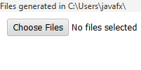
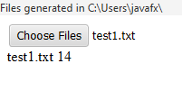
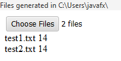

Go to the directory where files were generated:

Modal window with file selection should close, and "test1.txt" text should appear next to "Choose Files" button.
Below the button, the name of the file should appear with a non-zero number next to it:

A modal window with file selection should open again.
Go to the directory where files were generated.
Select files "test1.txt" and "test2.txt" (e.g., using left mouse button and Control key).
Modal window with file selection should close, and the following text should now be next to "Choose Files" button: "2 files".
The previous text should not be visible.
Below the button, "test1.txt" and "test2.txt" lines should appear, each with a non-zero number next to it:

A modal window with file selection should open again.
Click on "Cancel".
Modal window with file selection should close, and the text "2 files" should remain next to "Choose Files" button.
The text below the button also should not disappear or change.